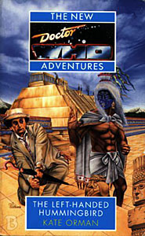

|
The Left-Handed Hummingbird
|
BASIC PLOT DOCTOR COMPANIONS MATERIALISATION CIRCUIT Pg 40 The TARDIS lands in Tenochtitlan, Mexico in 1487, and the Chameleon Circuit is working. Pg 110 Back in Mexico City, 1994, the Chameleon Circuit now playing up again (the Temporal Grace Circuits seemed similarly intermittent in The Dimension Riders). Pg 116 in the Special Documents section of the Institute, same time frame. Pg 125 London, St. John's Wood, December 20th, 1968. Pg 204 By this point, the TARDIS has materialized somewhere in New York City, December 8th, 1980 Pg 221 On the Titanic, 1912. The Chameleon Circuit is working again. Pg 256 In the Atlantic Ocean, to pick up Ace and then leave again. Pg 258 Back to New York City, December 1980, though we don't see it happening. PREPARATORY READING CONTINUITY REFERENCES It may interest readers to know that the quote before Pg 1, 'Oh no, I think I'm turning into a god,' is what the Roman Emperor Vespasian is said to have muttered as his dying words. Pg 1 "And deep inside him, something Blue was itching, something Blue was wrapping itself around him like a shroud." Creatures connected with colour, and visible through use of drugs, was also a mainstay of the Second Doctor story, Wonderland, written long after this one. Pg 3 "He who fights with monsters might take care lest he thereby becomes a monster. And if you gaze for long into an abyss, the abyss gazes also into you." This quotation, from Nietzsche, which became a mainstay of the NAs, actually appears here for the first time. Pg 7 "Ace in some sort of green military jacket and pants, wearing a black T-shirt that said Hard Rock Cafe Svartos." Unlikely, but Dragonfire is in the far future, I suppose. It's more likely that her T-shirt is a forgery, though. Reference to UNIT in Geneva. Pg 8 "We were having a holiday in Switzerland in 2030 -" Unseen adventure, but possibly tied in with The Enemy of the World, which happened at around that time period. Pg 13 "He sighed, remembering the temple in its full glory, remembering Barbara's futile attempt to change the Mexica." The Aztecs. "Human beings spent half their lives asleep - rather more than half, in most cases. But it was all office hours to the Doctor." The Doctor is occasionally seen to sleep (Divided Loyalties is one instance) but this is rare (he says so in The Talons of Weng-Chiang). To be fair, he spends a reasonable amount of time being knocked unconscious, so perhaps this makes up for it. Pg 15 "'That isn't important,' he said. 'No, I suppose not,' said the attendant. The Doctor has a 'These are not the droids you're looking for' moment, which he does occasionally in his Seventh incarnation. Pg 23 "Benny watched him. 'Do you think it's got anything to do with what happened in Oxford?' 'Maybe. Too early to tell. It's certainly not the Garvond.' 'You know I didn't mean that.' 'Yes, I do. You mean whatever caused our brush with our skull-faced friend, and the jaunt with the Silurians too.' The Dimension Riders and Blood Heat. They are referenced a number of times throughout this book. Pg 31 "A sneakered, ponytailed intern was pushing the gurney. The Doctor lay on it, partly covered by a white sheet. They had already put one of those plastic tags around his toe, labeled John Doe in smudged blue pen." How terribly prophetic. The same thing happens to the Seventh Doctor at the beginning of the American Telemovie. It goes pretty much worse for him on that later occasion. Pg 34 "'Enough of this,' said the Doctor." The phrase 'Enough of this' reverberates through the whole of The Left-Handed Hummingbird. For those who are interested, it is the Aztec equivalent of 'The End' and was written or spoken at the conclusion of a story, as it is here on Pg 264. Pg 35 "'It's - it's -' 'Don't say it,' said the Doctor. 'But it's -' 'Don't say it,' said Benny. 'It's bigger on the inside!'" Yes, we know. Right back to An Unearthly Child. We know. Pg 37 "The pool was one small advantage of his new-old TARDIS. He had been obliged to jettison the original TARDIS' pool when it had begun to leak into the co-ordinate circuitry." We saw the pool in The Invasion of Time. It was jettisoned some time prior to Paradise Towers. The TARDIS is 'new-old' as, when his old one was knocked into a tar pit in Blood Heat, the Doctor took the (dead in this alternate world) Third Doctor's TARDIS when he left. "The odd thing about time travel was that you never seemed to have any time." This is very similar to something that the Doctor once said in Earthshock. Pg 38 "Ace was not all that crash hot on meeting the original Mexicans. She didn't know too much about them, except about the sacrifice. And she was not going through the human sacrifice thing again." This is Ace's, slightly poetic reference to Love and War, one assumes. "But as the Doctor had once put it, the possibilities were endless." I think this is Dragonfire, but I may be wrong. Pg 41 "'Doctor,' she said, but the Time Lord was gazing around the marketplace, lost in memories hundreds of years old." Presumably, these are memories of The Aztecs. Pg 44 "He was not going to do anything as tedious as pretending to be a deity" is another reference to The Aztecs. It's exactly what Barbara did in that story. Pg 45 "Beauty and horror, Susan had said." In The Aztecs, although I think it was in a longer sentence. This is not a word for word quote. Pgs 48-49 "The Doctor, of course, had taken charge of the situation - after all, he was the one everyone thought was Quetzalwhosis. God knew he probably was. He had turned out to be weirder people." Ace is probably thinking of Merlin (Battlefield) among others. Pg 51 "'I spoke to an Aztec priest once,' said the Doctor." The Aztecs again, and the priest in question was Autloc. There is another reference to Barbara and her behaviour during The Aztecs. Pg 56 "It might be nothing more sinister than a natural pooling of psychic energy - like Saul the talking church." Timewyrm: Revelation and Happy Endings. Pg 58 "Professor Fitzgerald shrugged with his face. 'The Egyptian government won't let me back in to take a look at the Sheta-Khu'u sute, you know. Apparently there's a military blockade around it.'" An unrecorded adventure, although recent, since Bernice understands what he's talking about. The Sheta-Khu'u site is identified as an Osiran site on pages 125-126 of Set Piece, although we don't learn much more about it there either. Pg 60 "'Reminds me of Uruk,' said Ace. 'Could we be dealing with another Ishtar?'" Timewyrm: Genesys. Pg 61 "'How often have aliens interfered in Earth history, anyway?' 'Very often. There were the Osirans in Egypt, the Exxilons in Peru, Scaroth all over the place, The Timewyrm, of course, and various Dalek sorties, and -' 'And you're Merlin. Great.'" Pyramids of Mars and The Sands of Time, Death to the Daleks, City of Death, Timewyrm: Genesys and Timewyrm: Exodus, The Chase amongst others, Battlefield. "'Why do these bug-eyed monsters always pick on Earth?' 'Bug-eyed monsters?' said the Doctor, with mock indignity." This refers to original Doctor Who creator Sydney Newman, and his 'no Bug-Eyed Monsters' rule which Verity Lambert immediately and summarily ignored. Pg 67 "Tlotoxl tried to test Barbara's divinity with poison" In The Aztecs again. Pg 72 "'Before the time-storm, when the world ended at the edges of Perivale.'" The time-storm happened to Ace before Dragonfire. Pg 73 "There was a reference to someone called the Perfect Victim, the ixiptla of Tezcatlipoca, who lived as a nobleman for a whole year, followed everywhere by his attendants and his pleasure girls." Susan very nearly became one of these pleasure girls, back in The Aztecs. Pg 74 "I've just heard the stories - the place where no grass grows, a cave or a place in the hillside that's been cursed by the gods. One story says that an unfaithful priest fled here and was finally caught and slain on the hill." It's certainly not clear, but this could easily have been Autloc, from The Aztecs. Pg 75 "Suddenly, for no real reason, she had an overwhelming sense of homesickness - for Beta Caprisis, for the cool friendliness of the forest outside the Academy, even for Heaven before it became hell." Beta Caprisis is Benny's planet of birth, later visited by her in The Mary-Sue Extrusion. Her time at the Academy was mentioned in Love and War, and that story was also set on the planet Heaven. Pg 78 "She could feel those eyes of his burning into her back, the way they had sometimes burned into her when she was younger and more foolish. The 'gaze'." This is how the Doctor's piercing look is described in the novelisaion of Remembrance of the Daleks. Pg 79 "He stopped, fished in his pocket for anti-radiation pills." Seen in Destiny of the Daleks. Pg 80 "He was looking at a ruptured fuel pod from an Exxilon spacecraft." Death to the Daleks established the Exxilons' interference with Earth's history, although here it appears to be accidental. Pg 81 "She thought of all the stains on her own life. She thought of Mike lying like a shattered doll on the stairs of his house. She though of the sound Daleks made when you killed them." Remembrance of the Daleks, Ace's travels with Spacefleet in the gap between Love and War and Deceit. Pg 84 "'The cactus wine, the morning glory seed, the mushrooms - they are the causeways along which Huitzilopochtli can journey into Tenochtitlan. They are the smoky mirror we can use to see his world more clearly.' 'Now I see through a glass darkly,' said the Doctor." This is the next line in the Bible after the 'When I was a child, I spake as a child' section that Mr Wainwright quotes in The Curse of Fenric. It may, or may not, be a deliberate reference. Pg 85 "Ace dreamed. She dreamed she was back in her combat suit." Ace's not wearing of her combat suit is important throughout the Alternate Universe arc. Pg 94 "'Be quiet,' said a cool voice in her ear. Non-existent fingers ran themselves over her forehead, her shoulders. She shuddered and gulped. 'Be quiet, Bernice. Be quiet.' Doctor? Is that you?" It's not made clear, but it seems that the Doctor helps Bernice, either by already being lodged in her mind or by some other method, much as he calmed Jo in Blood Heat. Pg 100 The Alternate Universe arc tried to sort out UNIT dating, and made a fairly good attempt. According to Orman, this happened in the period before the end of 1968: "He'd stayed in London when the Yeti took over." (The Web of Fear). Nowadays (1994): "Doctor Sullivan's name inscribed across the bottom in a square hand. Sullivan had been one of those men closest to UNIT's little secret. He seemed to have vanished altogether." (Harry Sullivan, Robot-The Android Invasion, afterwards doing something very hush-hush with NATO as mentioned in Mawdryn Undead and seen in Harry Sullivan's War, System Shock and Millennium Shock); "RSM Benton had chased Macbeth off his used car lot" (The Brigadier confirmed Benton's new career in Mawdryn Undead); "Corporal Bell had been promoted to captain and had ended up brain-damaged in a car accident." (post-Face of the Enemy, but see Continuity Cock-Ups); "Captain Yates, who had retired under odd circumstances in the mid-seventies, wouldn't speak to anyone." (Invasion of the Dinosaurs, Planet of the Spiders); A nurse who worked at UNIT: "She spoke of secret tests and strange technology, and how Doctor Sullivan had made her write 'heart attack' on Hubert Clegg's death certificate." (Clegg died in Episode 1 of Planet of the Spiders). Pg 101 "There were mysterious evacuations of London, the prison riot, something chemical in Wales, something nuclear in Cornwall, the church they'd blown up for Chrissake." The Web of Fear and Invasion of the Dinosaurs at least, The Mind of Evil, The Green Death, Battlefield, The Daemons. Note that this dates Battlefield to 1994 or earlier. Pg 103 "She had mucked up his smooth-running plans more than once, going off when she should have stayed put, staying put when she should have gone away. Telling people things they weren't supposed to know." This latter occurred most obviously twice during The Curse of Fenric. Pg 104 "She remembered when they'd first met on Svartos, that thrilling offer of a chance to hitch-hike the galaxy." Dragonfire. Pg 105 "When she had run away from him on Heaven, it had been the worst thing she could think of to do to him, the worst possible punishment for his sins. He wasn't scared of monsters or pain or dying, he was scared of being alone. She imagined him travelling through the blackness at the end of the Universe, every sun and planet and life-form withered away to nothing, leaving him travelling, travelling alone." Ace left him in Love and War. The quote is longer than strictly necessary because I like it. Pg 110 "This time is out of joint. Someone has interfered again. Something's changed. Something changed." The first bit is a Shakespeare quotation, always welcome. The rest refers to the Meddling Monk. Pg 113 Vampires are name-checked, who appeared in State of Decay, Goth Opera, kind of in The Curse of Fenric and would return in Blood Harvest and Vampire Science. "There are many and varied creatures which feed on the mind. The Mara fed on raw emotions. The Fendahl sucked souls whole." Kinda and Snakedance, Image of the Fendahl. Pg 114 "The UNIT people spoke of him [The Doctor] like some kind of harbinger of doom. When he was around, people died, people's gardens up and killed them." Zbigniev refers to the Doctor in pretty much this way in Battlefield. The gardens thing is a reference to Seeds of Doom. Pg 116 "When I first met you,' she said quietly, 'you were playing a game.'" Love and War. Pg 122 "But after the Yeti had come" Orman again appears to date the Yeti attack (The Web of Fear) to sometime during 1968. Pg 123 "He hadn't done too many ghosts, though there had been that flat in Piccadilly - at least before the media got hold of it." Uncertain reference, although Snow creatures attacked people in Piccadilly, according to Time and Relative. It's probably not that, though. Pg 133 "She took a shuddering breath and started to cry. 'The healer becomes the warrior.'" This line, used often to refer to the Doctor, is relevant again in No Future. Pg 138 "'Something fundamental in the fabric of the universe was altered. Like a colossal watchmaker adjusting a cog.'" This refers to the Monk's manipulation of time. The watchmaker argument for the existence of God was originally put forward by William Paley. For more information, refer to Richard Dawkins' book, 'The Blind Watchmaker,' which, I think, was illustrated by his wife, Lalla Ward (Romana II), in the rather bizarre way the universe works. Reference to Dodo and Leela. Pg 146 Another mention of Clegg's death from Planet of the Spiders. Pg 147 references Ace's mother (The Curse of Fenric, Happy Endings). "At the moment, I'm in Crook Meersham having a lousy Christmas." Nightshade, but see Continuity Cock-Ups. "'Perhaps we should pop over to Woodstock,' suggested the Doctor. 'There must be at least two of me there already.'" One of them is the Second Doctor, in Wonderland. Pg 151 "Eleanor and her old man were watching Nightshade on TV." Nightshade is the Who Universe equivalent of Quatermass. The star, Edmund Trevithick, and much of the imagery from Quatermass appear in the book Nightshade. Pg 154 "'Yeah?' Cris smiled. 'You made the East?' 'Repeatedly. I dropped out a long, long time ago, Cris.'" We saw the Doctor 'drop out' in Lungbarrow. He 'made the East' pre-eminently in Marco Polo, but also in a variety of other places. Pg 155 references Ace's time as a Dalek hunter again, while Pg 156 references the Time-storm from Dragonfire. Pg 158 "But the drugs, ah, he had to be careful there. One good dose of Aspirin would be enough to kill him." This supposedly references The Mind of Evil, which Orman was thinking of, but subsequent analysis demonstrated that that story didn't specify aspirin. Subsequently, the effect of aspirin on the Doctor has been mentioned in newspaper articles and entered popular mythology. It started right here. Pg 159 "'Unhand me, madam,' he muttered, as she hauled him to his feet." 'Unhand me, madam' was a phrase famously uttered by the Third Doctor during The Daemons and Verdigris. Pg 160 "The hippies had made her feel homesick for the Travellers, a time she could never go back to, a dream that became diseased and withered away." Love and War. Benny's thoughts reflect the disillusionment many felt as the hippy movement died in the late 1960s and early 1970s. The Garvond, from The Dimension Riders, gets a name-check. Pg 181 "She'd spent whole days on the phone, trying to get that little bit of paper. Lethbridge-Stewart was always away somewhere, and besides, they hadn't yet met; no one had heard of her. Even the Doctor was a new and little-known entity as far as UNIT was concerned. She'd changed tactics, called the RAF: Air Commodore Gilmore had retired. She spent another day with the phone book, trying to track him down. At least he remembered her - gave him a good fright, when he'd recognized her voice. He had no official standing, of course, but could he put her in touch with the Brigadier." This time period is only just after The Web of Fear (possibly The Invasion), which is why the Doctor isn't well-known. Gilmore is from Remembrance of the Daleks. The Brigadier's failure to recognize Ace when he meets her in Battlefield is explained away in No Future, if you're prepared to read a little between the lines. Pg 182 "The room must once have been a large dining hall. They had converted it into some sort of laboratory, complete with those old computers with the chunky coloured lights and big tape DASDs spinning around for all they were worth." Lovely - Orman colours the scene with what we know of computers from the 1960s episodes of Who, particularly The War Machines. Pg 183 "Incongruously, there was an Escher poster on the wall over the bed, two hands drawing one another in a loop that went on forever." As well as this picture being wonderfully symbolic of the Doctor's situation in this novel, MC Escher was the influence on Christopher H Bidmead when he wrote Castrovalva, and one of his pictures, showing a city on a hill, had that name. Pg 187 "Ace was thinking about the time he'd dislocated his arm (which had been her fault)." Nightshade. "They conferenced in the kitchen in Allen Road." This house, a mainstay of the NAs, was first introduced in Cat's Cradle: Warhead, and appeared right through until The Dying Days. Pg 191 "The Doctor's eyelids half-lowered. 'I've been possessed more times than I can remember.'" Actually, not as many as you'd think. Let's just mention a couple of times during The Trial of a Time Lord and leave it there. Pg 193 "I'm no one's sacrifice. No one's." Not just this novel, but the whole Alternate Universe cycle has an underlying theme of sacrifice. It's most obvious in Blood Heat and in No Future. "Peter Pan ripped loose his shadow. The shadow danced over the walls, reaching out black and sticky hands to smother little Peter, not so immortal as he thought he was. Wendy was off-stage, screaming something, but Peter's mouth was full of shadow, tasting of dust and gunpowder, blood and cactus wine." Equating the Doctor to Peter Pan is nice and would be done again in various places including the new series. This is another remarkably prophetic line as, as a result of events in Interference and in Unnatural History, the Eighth Doctor would lose his shadow. Pgs 193-194 "Wonder what the Brigadier makes of all this? Didn't happen the first time round. Must ask him next time I see him. Wonder if he noticed the change, noticed his past shifting... someone playing around with time... somebody playing." It's the Monk, of course. When the Doctor does see the Brigadier again, in No Future, he doesn't ask him (that we see), but he does wipe his memories, so it's possible that all this gets wiped too. Pg 194 "Tlotoxl and his stone knife, hovering by the altar, ready to slay the ixiptla. Benny screaming on the altar, howling out her horror. Ace with an obsidian knife. Ace with a knife. Ace." Tlotoxl is from The Aztecs. Ace stabs the Doctor while possessed later in this book, and pretends to do so again in No Future. Pg 195 "The enemy wanted him, wanted him, they would crush universes to have him. Make him crush universes, snapping the bright mainspring of their existence, leaving them to run down, down into the darkness." This is what the Doctor had to do at the end of Blood Heat. Pg 199 "The cleaner turned, a portly woman in a housecoat. Winter glared in through the dusty glass, making her a rounded, faceless silhouette, the long shape of a rifle clutched in her podgy hands. She was already bringing it up when Ace strode in, knocked in neatly out of her grasp and applied a nerve pinch to the base of her neck that sent her to the floor like a deflated balloon." It may not be deliberate, but Ace foiling an assassination attempt on John Lennon is reflected by her making an assassination attempt (allegedly) on the Queen in No Future. Pg 200 "You might have been a waitress, you might have been a chemist, you might have been a mother if not for him -" Ace was a waitress when she and the Doctor met (Dragonfire) and her Nitro Nine experiments clearly make her qualified as a chemist. The line 'you might have been a mother' may refer to the nanobots that it later becomes clear the Doctor put into Ace's system which keep her free of disease and may (it's never clarified in Ace's case) have made her infertile. Chris certainly is in Dead Romance. If true, it's actually quite startling how much of what came later in the NAs is defined in these early books. Pg 202 "Huitzilin couldn't have gone on as a ghost. The amount of power required to maintain that state would have increased exponentially. Like Xanxia." A reference to the villain in The Pirate Planet. Pg 203 holds another reference to the events of Blood Heat. Pg 204 "Benny remembered Zamina calling them catfood monsters." Transit. Pg 207 "Ace couldn't make herself believe that the Doctor didn't know she was following him. So she knew that he knew. Did he know that she knew that he knew? Smeg!" The word 'Smeg' does not actually exist, it having been made up as a simulated swear word for the programme Red Dwarf (although it's a contraction of "smegma" which is quite rude indeed). Pg 211 "'Do you know what you've just done?' shouted the doorman. 'I just shot John Lennon,' said Mark." Mark Chapman's behaviour, strange though it may seem, is historically accurate, as is the setting (there is an alleyway in which the Doctor and Ace could have been). You do begin to get the feeling, with the Aztecs, John Lennon's death, the Beatles' last concert and the sinking of the Titanic, that Orman was terrified they were only going to let her write one book, and wanted to get everything in. Pg 213 "I was asleep in one of the libraries (There are dozens, scattered about the place)" After the Lungbarrow refit, the 8DAs suggest that there is only one, but it's big. Pg 215 "Cris bolted back with the Feinbergers and I pulled out the vital stats scanner." The generic term 'Feinberger' was used in Star Trek, the Original Series, and generally referred to Dr McCoy's medical scanners. They were named after Irving Feinberg, the prop master who designed them. Pg 217 "Not fair, is it? I can remember trying to shoot the Doctor's head off, for some terribly good, some very logical reason." Transit. Pg 220 "The deep wound in his chest is almost healed, though there will be a scar in the bone where the knife-point turned." This is relevant in No Future, as Ace pretends to stab him in the same place (although she doesn't know that, as she doesn't remember stabbing him here). The wound is often mentioned throughout the NAs, and never really stops hurting him. "It isn't even death he's facing. Her features he knows from a hundred, a thousand encounters." Including at least one direct one in Timewyrm: Revelation. Pg 224 "'There are feathers growing out of your scalp, sir.' 'No there aren't.' 'Oh. Sorry, sir, you're right. There aren't.'" And these are not the droids you're looking for. Again. Pg 225 "He remembered assuring Borusa that he'd nothing to do with the liner's sinking. Wasn't worth going back and telling him about this, of course. He'd only get a stony stare." The fourth Doctor did this in The Invasion of Time. Borusa is, of course, now a stone statue on the side of Rassilon's tomb (The Five Doctors) but won't be for much longer (Blood Harvest and/or The Eight Doctors. Take your pick!) Pg 226 "'So many people must have asked you these questions.' 'The very first was a teacher who wanted to change the Aztecs. Stop the sacrifices.'" Barbara, in The Aztecs again. Pg 232 "'No one else dies,' said the Doctor. 'Enough. Enough of this.'" Glorious. Pg 233 "He had been touched by more than one psychevore." The Mara and the Fendahl at least. Pg 235 "It was a stem and a loop, the thickness of his wrist, a rod that curved back on itself. Markings danced up its sides in an alien language, geometrical symbols like Mayan writing." This is the Exxilon fuel rod, the Xiuhcoatl. It was established in Death to the Daleks that the Exxilons interfered with the development of Earth, so it makes sense that their language should resemble that of the Mayans. Pg 237 On the Xiuhcoatl: "'You can use it to fuse two molecules of hydrogen or you can turn a puddle into a nuclear bomb. You could hollow out a planet with it. You could write your name on a tree with it.'" This is similar in its poetic style to D84's description of a Laserson Probe in The Robots of Death. "How fortunate that the Exxilons were eaten by their own technology." As we saw in Death to the Daleks. Pg 239 "Ace was already furiously tapping the keys of the Index File." The TARDIS database is called this in Castrovalva, although it was also established that it didn't exist. Presumably the Doctor decided it was a good idea to have one after that story and intalled this. Pg 244 "He grinned at the Doctor. 'Are words your food, world killer? All this talk, and still the healer is becoming the warrior. How many people have you seen die, killer of worlds?'" 'World killer' because of Remembrance of the Daleks and The Pit. And Pg 220 makes it clear that the Doctor has lost count of the number of people he has seen die. Pg 259 Bernice here expresses her uncertainty about staying with the Doctor, which she has been thinking about at least since Blood Heat. It is resolved in Conundrum. Pg 260 Ace ends the agreement with the Doctor about her combat suit. This is resolved in No Future. Pg 261 "I don't see what the problem is, she thought. You used to work with UNIT, happily work with soldiers and weapons." The Invasion through Terror of the Zygons, on and off, but you knew that. Actually, were Ace thinking more clearly, she might remember Battlefield, where the Doctor was not too impressed by the whole weapons thing. OLD FRIENDS AND OLD ENEMIES NEW FRIENDS AND NEW ENEMIES Christian Xochitl Alvarez, who dies, but this is reversed by the end of the book. Also Ocelot, his cat. He reappears in Happy Endings. Preston, a student. Professor Lawrence Fitzgerald is an old friend of the Doctor's apparently, but we've never seen him before. He is murdered by Bernice, with a frying pan, but it's possible that this is reversed as, by the end of the book, the first part hasn't happened in the same way. Also his assistant, Robin. Hamlet Macbeth, erstwhile of UNIT's briefly-lived Paranormal Division, who also dies, but ends up not being dead (I think). He returns, anyway, in a 'Change of Mind', an Orman-scripted DWM comic strip (issues 221-223), and in Happy Endings. In London, 1978, the only survivors other than Christian appear to be Eleanor and Eleanor's bloke. Baby Ben, rescued from the Titanic. He reappears in Happy Endings. In 15th century Mexico: Ahuitzol, Tlacaelel, Ce Xochitl appear to survive. In Mexico, in the century and a half following 1168 (the Doctor does not meet these people here, but he may do later): Huitzilopochtli and Quauilticac.
CONTINUITY COCK-UPS PLUGGING THE HOLES [Fan-wank theorizing of how to fix continuity cock-ups] FEATURED ALIEN RACES FEATURED LOCATIONS Pg 1 New York city, outside the Dakota Building, 8th December, 1980 (the assassination of John Lennon). Pg 5 Mexico City, January 1994, including Guatemala Street, The Hospital of Our Lady (which doesn't appear to actually exist, so far as I can tell), the excavation site of the great temple of Tenochtitlan, Christian's apartment, Pg 9 features a flashback to October 31st, 1993, in the tiangui (marketplace) in Mexico City. Pg 20 Another flashback to 21st February, 1978. Pg 39 Tenochtitlan, Mexico, 1487, some years (we can assume) after The Aztecs. Benny dates the Doctor's first visit to 1454. Pg 99 Over the Atlantic, 1994 again. Pg 122 December 20th, 1968 to January 13th, 1969 in St John's Wood and environs (including Baker Street and Notting Hill Gate), London. Pg 168 and beyond features flashbacks to the advent of the Mexica, some time after 1168. Some of this takes place near the city of Tula. Pg 196 A hospital in London and Hyde Park, London, January 30, 1969. Pg 204 Back to December 8th, 1980 in New York Pg 221 Aboard the Titanic and in the Ocean around it, 7.30 pm, Sunday April 14th - 2.20 am, Monday April 15th, 1912 Pg 258 Back to New York, 1980, now December 15th. Pg 261 July, 1986, the press conference after the diving expedition to the Titanic. Pg 262 Somewhere, sometime - where the Monk is. Pg 263 October 31st, 1993, The tiangui in Mexico City. IN SUMMARY - Anthony Wilson |
|
 |